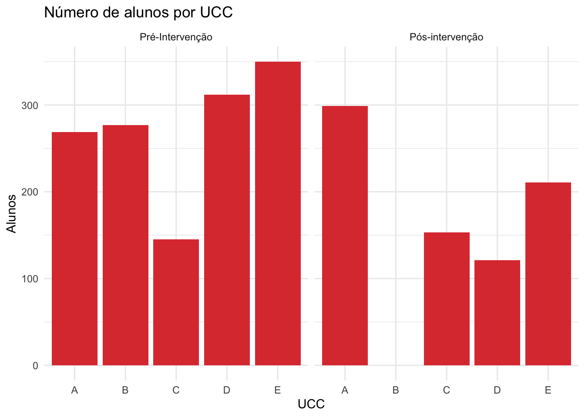
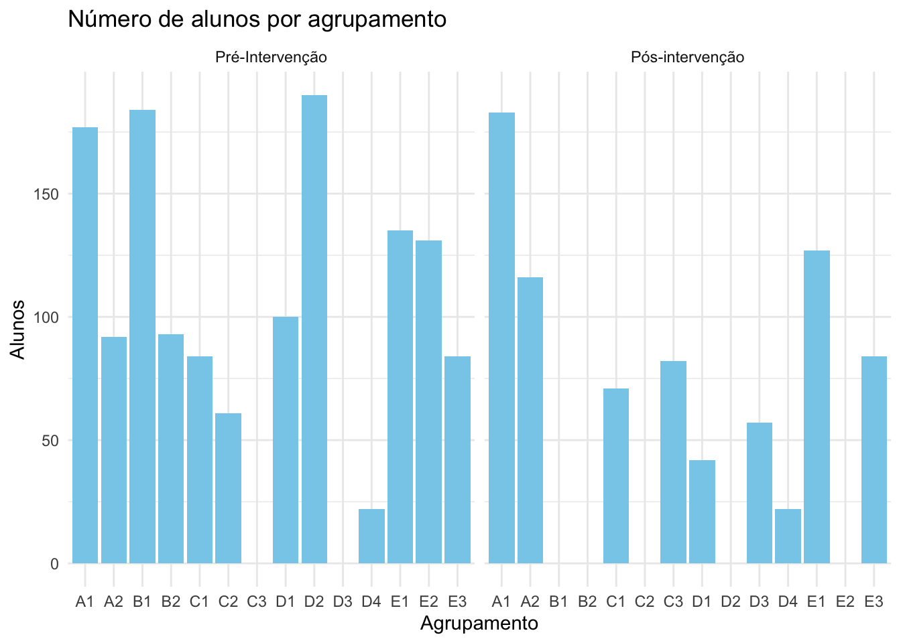
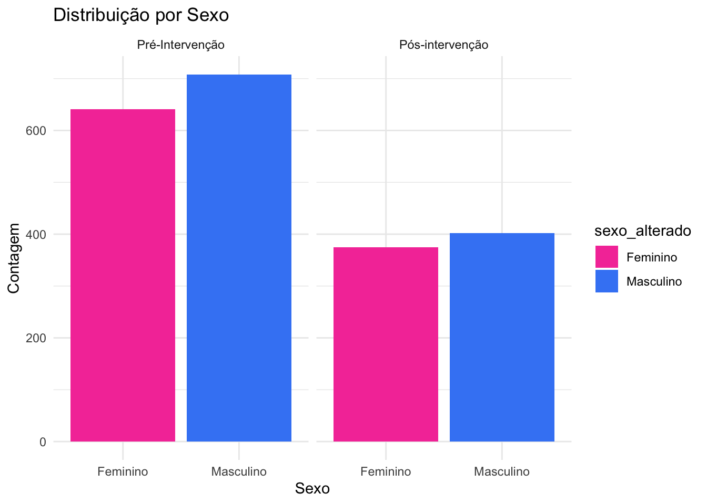

projeto = "Dias Comemorativos: Prevenção do AVC"Projeto CAPSTONE GRUPO 14
Bem vindo aos “Dias Comemorativos: Prevenção do AVC”!
1 Introdução
O projeto Dias Comemorativos: Prevenção do AVC tem como objetivo aumentar a literacia em saúde da comunidade escolar relativamente ao Acidente Vascular Cerebral (AVC). Para isso, disponibiliza um conjunto de recursos de apoio a profissionais de educação, saúde e outros, de modo a abordarem o tema AVC de forma coerente, sustentada e estruturada ao longo do ano letivo.
1.1 Porquê o AVC?
O AVC é a primeira causa de morte em Portugal e foi identificado no Plano Local de Saúde Maia/Valongo como uma das áreas de intervenção prioritária nos municípios da Maia e de Valongo, para os anos de 2023 a 2025.
1.2 Porquê intervir nos dias comemorativos?
Os Agrupamentos de Escolas (AEs), as autarquias e os cuidados de saúde, têm um papel fundamental no desenvolvimento de estratégias e atividades de promoção da saúde e bem-estar da comunidade, sendo a celebração de dias comemorativos uma atividade frequente. Os estudos revelam que, para aumentar o seu impacto em saúde, estas intervenções devem ser: continuadas ao longo do tempo, focadas na comunidade e ter objetivos bem definidos.
Pretende-se que a articulação entre AEs, autarquias e cuidados de saúde,fomente a saúde e bem-estar da comunidade, através de estratégias e objetivos comuns. Com isto em mente, nasceu o projeto DIAS COMEMORATIVOS: PREVENÇÃO DO AVC.
1.3 Entidades Promotoras
Unidade Local de Saúde (ULS) São João1, Câmara Municipal da Maia (CMM), Câmara Municipal de Valongo (CMV).
ULS São João
O Decreto-Lei nº 23/2019, de 30 de janeiro (Presidência de Conselhos de Ministros (2019)), concretizou a transferência de competências para os órgãos municipais e para entidades intermunicipais de saúde, visando a criação de uma estratégia entre os municípios e o Serviço Nacional de Saúde (SNS) incluindo: manutenção, conservação e equipamento das instalações das unidades de prestação de cuidados de saúde primários; gestão e execução dos serviços de apoio logísticos dos ACES; e gestão dos trabalhadores da carreira operacional das unidades funcionais dos ACES. Por outro lado, o Decreto-Lei nº 102/2023, de 7 de novembro (Saúde (2023)), determinou a criação de Unidades Locais de Saúde (ULS), com natureza de entidades públicas empresariais. Com este modelo organizativo, procedeu-se à incorporação de hospitais e centros hospitalares com os Agrupamentos de Centros de Saúde (ACES), criando uma prestação de cuidados primários e hospitalares integrados.
Assim, desde o dia 1 de janeiro de 2024, o Centro Hospitalar Universitário de São João, E.P.E., passou a integrar os ACES Grande Porto III – Maia/Valongo e Grande Porto VI – Porto Oriental, denominando-se, atualmente, Unidade Local de São João, E.P.E. A sua área de influência geográfica da ULS São João engloba a totalidade dos concelhos da Maia e Valongo, juntamente com as freguesias de Bonfim, Campanhã e Paranhos do concelho do Porto, resultando numa área geográfica total de 121,08 km2 (João (s.d.)).

1.4 A quem se destina este projeto?
A alunos do 1º ao 9º ano, pretendendo-se que estes partilhem os conteúdos abordados com as suas famílias
1.5 Quais os conteúdos a ser abordados?
As diferentes atividades abordam os seguintes temas:
O que é o AVC;
O que contribui para aumentar o risco de ter um AVC;
Quais os sinais de alarme de AVC;
O que se deve fazer quando se identificam sinais de alarme.
1.6 Como decorre a implementação?
Ao longo do ano são partilhadas atividades curtas, abordando os temas referidos no ponto anterior e aproveitando as diferentes datas comemorativas:
Dia Mundial do AVC (29 de outubro)
Dia do Não Fumador (17 de dezembro)
Dia Internacional dos Direitos Humanos (10 de dezembro)
Dia dos Afetos (14 de fevereiro)
Dia Mundial da Obesidade (4 de março)
Dia Nacional do Doente com AVC (31 de março)
De salientar que cada atividade pode ser implementada de forma independente das restantes e que não existe um número obrigatório de atividades. Pretende-se fornecer conteúdo coerente e cientificamente validado, sem impor restrições, apoiando assim os profissionais envolvidos.
1.7 Atividades focadas na comunidade
As atividades podem ser dinamizadas por profissionais de diversas áreas (educação, saúde, câmaras municipais), com o apoio logístico e científico das entidades promotoras.
Além da discussão em grupo na sala de aula, pretende-se promover a discussão dos alunos com as suas famílias. Os materiais lúdicos utilizados na escola contêm atividades para realizar com a família e um código QR, que permite aceder a um website com atividades lúdicas e outras informações.
Em simultâneo, decorrem outras iniciativas comunitárias de divulgação de conteúdo informativo sobre o AVC, em alinhamento com este projeto.


Celebração do Dia Mundial do AVC: Cartões de jogo distribuídos na dinamização de uma das atividades do projeto.
Para mais informação
Consulte aqui informações adicionais e os restantes jogos do projeto.
1.8 Referências
João, São. s.d. «Notícias São João: ULS São João». https://portal-chsj.min-saude.pt/media/noticias/noticia-44/uls-sao-joao.
Presidência de Conselhos de Ministros. 2019. «Decreto-Lei n.º 23/2019: Concretiza o quadro de transferência de competências para os órgãos municipais e para as entidades intermunicipais no domínio da saúde». Diário da República n.º 21/2019, Série I de 2019-01-30.
Saúde, Ministério da. 2023. «Decreto-Lei n.º 102/2023. Procede à criação, com natureza de entidades públicas empresariais, de unidades locais de saúde». Diário da República n.º 215/2023, Série I, 7 de novembro de 2023.
2 Carregar os pacotes necessários
rm(list = ls(all.names = TRUE)) # limpa todos os objetos, incluindo os ocultos
required_packages <- c("janitor",
"tidyverse",
"rio",
"here",
"haven",
"data.table",
"lubridate",
"readxl",
"broom",
"gt",
"gtsummary"
)
for (pkg in required_packages) {
# install packages if not already present
if (!pkg %in% rownames(installed.packages())) {
install.packages(pkg)
}
# load packages to this current session
library(pkg, character.only = TRUE)
}
remove(required_packages)
remove(pkg)3 Carregar a base de dados
inquerito_AVC_2024 <- read_excel("datasets/inquerito_AVC_2024_processed.xlsx") |>
clean_names()
names(inquerito_AVC_2024) [1] "id" "altura_questionario" "ucc"
[4] "sexo" "agrupamento_escolas" "orgao_afetado"
[7] "sim_fs" "desvio_face" "dificuldade_fala"
[10] "falta_forca_braco" "imediatamente_avc" "fr_fumar"
[13] "fr_sal_gorduras" "fr_sem_atividade" "fator_risco_avc_todos"
[16] "numero_emergencia" #ordenar sempre a altura do questionário
inquerito_AVC_2024$altura_questionario <- factor(inquerito_AVC_2024$altura_questionario,
levels = c("Pré-Intervenção", "Pós-intervenção")) n_row_pre <- inquerito_AVC_2024 %>%
filter(altura_questionario == "Pré-Intervenção") %>%
nrow()
n_row_pos <- inquerito_AVC_2024 %>%
filter(altura_questionario == "Pós-intervenção") %>%
nrow()
Total de inquéritos
No total, foram realizados 1353 inquéritos pré intervenção e 784inquéritos pós intervenção.
4 Explorar a base de dados
4.1 Contagem de inquéritos por UCC pré e pós-intervenção
summary_inquerito_by_ucc <- inquerito_AVC_2024 %>%
summarise(
count = n(),
.by = c(altura_questionario, ucc),
) %>%
arrange(altura_questionario)
summary_inquerito_by_ucc# A tibble: 9 × 3
altura_questionario ucc count
<fct> <chr> <int>
1 Pré-Intervenção A 269
2 Pré-Intervenção E 350
3 Pré-Intervenção D 312
4 Pré-Intervenção C 145
5 Pré-Intervenção B 277
6 Pós-intervenção D 121
7 Pós-intervenção A 299
8 Pós-intervenção E 211
9 Pós-intervenção C 1534.2 Contagem de inquéritos respondidos por agrupamento pré e pós-intervenção
summary_inquerito_by_agrupamento <- inquerito_AVC_2024 %>%
summarise(
count = n(),
.by = c(altura_questionario, agrupamento_escolas)
) %>%
arrange(altura_questionario)
summary_inquerito_by_agrupamento# A tibble: 21 × 3
altura_questionario agrupamento_escolas count
<fct> <chr> <int>
1 Pré-Intervenção A1 177
2 Pré-Intervenção A2 92
3 Pré-Intervenção E1 135
4 Pré-Intervenção E2 131
5 Pré-Intervenção D2 190
6 Pré-Intervenção D1 100
7 Pré-Intervenção E3 84
8 Pré-Intervenção C2 61
9 Pré-Intervenção C1 84
10 Pré-Intervenção B2 93
# ℹ 11 more rows4.3 Codificar o sexo
str(inquerito_AVC_2024$sexo) chr [1:2137] "Feminino" "Masculino" "Masculino" "Masculino" "Masculino" ...# Recodificar a variável sexo
inquerito_AVC_2024 <- inquerito_AVC_2024 %>%
mutate(
sexo_alterado = factor(
case_when(
sexo == "Feminino" ~ 1,
sexo == "Masculino" ~ 2,
sexo == "Sem resposta" ~ NA_real_
),
levels = c(1, 2),
labels = c("Feminino", "Masculino")
)
)
str(inquerito_AVC_2024$sexo_alterado) Factor w/ 2 levels "Feminino","Masculino": 1 2 2 2 2 1 1 1 1 2 ...5 Visualização de Dados
5.1 Contagem de inquéritos respondidos por UCC pré e pós-intervenção
summary_inquerito_by_ucc$altura_questionario <- factor(summary_inquerito_by_ucc$altura_questionario,
levels = c("Pré-Intervenção", "Pós-intervenção"))
grafico_alunos_por_ucc <- ggplot(data = summary_inquerito_by_ucc, aes(x = ucc,
y = count))+
geom_bar(stat = "identity", fill = "#de3e3e") +
labs(title = "Número de alunos por UCC",
x = "UCC",
y = "Alunos") +
facet_wrap(~altura_questionario)+
theme_minimal()
grafico_alunos_por_ucc 
5.2 Contagem de inquéritos respondidos por agrupamento pré e pós-intervenção
grafico_alunos_por_agrupamento <- ggplot(data = summary_inquerito_by_agrupamento, aes(x = agrupamento_escolas,
y = count))+
geom_bar(stat = "identity", fill = "skyblue") +
labs(title = "Número de alunos por agrupamento",
x = "Agrupamento",
y = "Alunos") +
facet_wrap(~ altura_questionario) +
theme_minimal()
grafico_alunos_por_agrupamento 
5.3 Distribuição dos inquéritos respondidos por sexo pré e pós-intervenção
inquerito_AVC_2024$altura_questionario <- factor(inquerito_AVC_2024$altura_questionario,
levels = c("Pré-Intervenção", "Pós-intervenção"))
inquerito_AVC_2024 <- inquerito_AVC_2024 %>%
filter(!is.na(sexo_alterado))
distribuicao_sexo <- ggplot(inquerito_AVC_2024, aes(x = sexo_alterado, fill = sexo_alterado)) +
geom_bar() +
labs(title = "Distribuição por Sexo",
x = "Sexo",
y = "Contagem") +
scale_fill_manual(values = c("Masculino" = "#4287f5", "Feminino" = "#f542a7")) +
facet_wrap(~ altura_questionario) +
theme_minimal()
distribuicao_sexo
6 Modelos Estatísticos
6.1 Tabela sumária dos dados
tabela1 <- tbl_summary(
inquerito_AVC_2024,
include = c(sexo, ucc, agrupamento_escolas, numero_emergencia), # Selecionar variáveis específicas para o resumo
by = altura_questionario, # Dividir a tabela pelo estado da doença cardíaca
missing = "no" # Excluir dados ausentes do resumo
) |>
modify_spanning_header(c("stat_1", "stat_2") ~ "**Intervenção**") |>
add_n() |> # Adicionar uma coluna para contar observações não ausentes
add_p() |> # Realizar testes estatísticos para comparar grupos
modify_header(label = "**Variable**") # Personalizar o cabeçalho da tabela
tabela1| Variable | N |
Intervenção
|
p-value | |
|---|---|---|---|---|
| Pré-Intervenção N = 1,3491 |
Pós-intervenção N = 7771 |
|||
| sexo | 2,126 | |||
| Feminino | 641 (48%) | 375 (48%) | ||
| Masculino | 708 (52%) | 402 (52%) | ||
| ucc | 2,126 | |||
| A | 268 (20%) | 295 (38%) | ||
| B | 277 (21%) | 0 (0%) | ||
| C | 144 (11%) | 151 (19%) | ||
| D | 311 (23%) | 121 (16%) | ||
| E | 349 (26%) | 210 (27%) | ||
| agrupamento_escolas | 2,126 | |||
| A1 | 176 (13%) | 183 (24%) | ||
| A2 | 92 (6.8%) | 112 (14%) | ||
| B1 | 184 (14%) | 0 (0%) | ||
| B2 | 93 (6.9%) | 0 (0%) | ||
| C1 | 84 (6.2%) | 70 (9.0%) | ||
| C2 | 60 (4.4%) | 0 (0%) | ||
| C3 | 0 (0%) | 81 (10%) | ||
| D1 | 100 (7.4%) | 42 (5.4%) | ||
| D2 | 190 (14%) | 0 (0%) | ||
| D3 | 0 (0%) | 57 (7.3%) | ||
| D4 | 21 (1.6%) | 22 (2.8%) | ||
| E1 | 134 (9.9%) | 126 (16%) | ||
| E2 | 131 (9.7%) | 0 (0%) | ||
| E3 | 84 (6.2%) | 84 (11%) | ||
| numero_emergencia | 2,126 | |||
| 101 | 3 (0.2%) | 1 (0.1%) | ||
| 111 | 8 (0.6%) | 2 (0.3%) | ||
| 112 | 1,302 (97%) | 765 (98%) | ||
| 125 | 5 (0.4%) | 1 (0.1%) | ||
| Não sei | 21 (1.6%) | 6 (0.8%) | ||
| Sem resposta | 10 (0.7%) | 2 (0.3%) | ||
| 1 n (%) | ||||
6.2 Teste de proporção
tabela_teste_proporcao <- tbl_summary(
inquerito_AVC_2024 %>% mutate(numero_emergencia = ifelse(numero_emergencia == "112", "112", "Outros")),
include = c(numero_emergencia), # Seleciona apenas a variável de interesse para análise
by = altura_questionario, # Divide a tabela pelo estado da intervenção (pré e pós)
missing = "no" # Exclui dados ausentes do resumo
) |>
add_n() |> # Adiciona uma coluna para contar observações não ausentes
add_p(test = all_categorical() ~ "fisher.test") |> # Usa o teste exato de Fisher para comparar proporções
modify_header(label = "**Variable**") |> # Personaliza o cabeçalho da tabela
modify_spanning_header(c("stat_1", "stat_2") ~ "**Intervenção**") # Define o cabeçalho dos grupos
# Visualizar a tabela criada
tabela_teste_proporcao| Variable | N |
Intervenção
|
p-value | |
|---|---|---|---|---|
| Pré-Intervenção N = 1,3491 |
Pós-intervenção N = 7771 |
|||
| numero_emergencia | 2,126 | |||
| 112 | 1,302 (97%) | 765 (98%) | ||
| Outros | 47 (3.5%) | 12 (1.5%) | ||
| 1 n (%) | ||||
prop.test(x = c(1306, 771), n = c(1353,784))
2-sample test for equality of proportions with continuity correction
data: c(1306, 771) out of c(1353, 784)
X-squared = 5.3492, df = 1, p-value = 0.02073
alternative hypothesis: two.sided
95 percent confidence interval:
-0.032395877 -0.003916098
sample estimates:
prop 1 prop 2
0.9652624 0.9834184 Notas de rodapé
Unidade de Saúde Pública, Unidade de Cuidados na Comunidade (UCC) destes conselhos e Serviço de Neurologia.↩︎